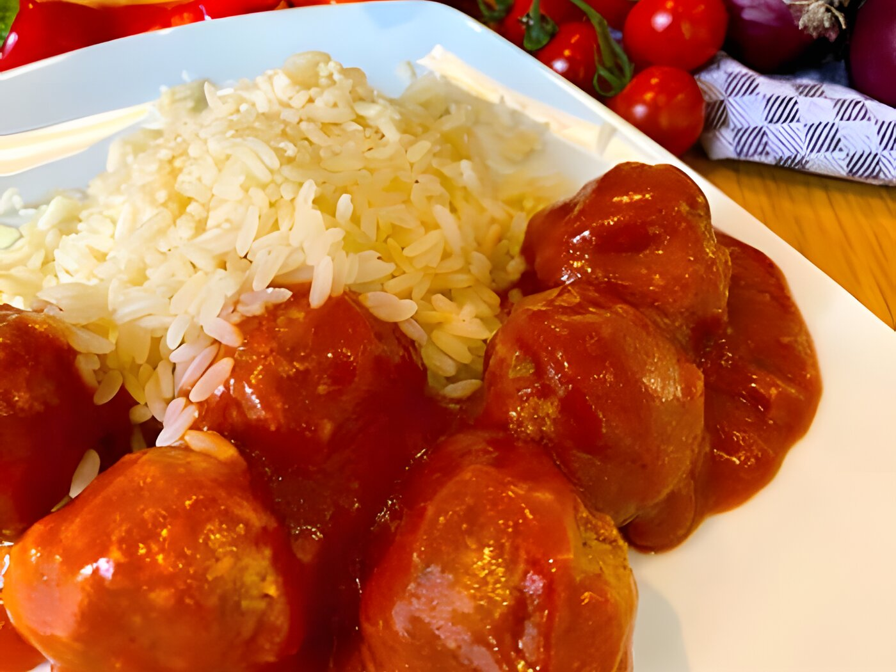

30 November 2022
Ingredion to Showcase Plant-Based Expertise at PBWE2022
Ingredion will demonstrate its plant-based credentials at the upcoming Plant Based World Expo 2022 (30 November - 1 December) alongside KaTech Ingredient Solutions, which Ingredion acquired last year. Inspired to develop the next generation of plant-based products, Ingredion and KaTech will showcase a suite of delicious recipe prototypes at the expo.
The prototypes, which will utilise functional ingredients that help manufacturers meet demands for taste, texture and nutrition, will be freshly prepared at the event by Ingredion. The prototypes - available for attendees to sample on-stand - will include a plant-based coronation chicken filler with plant-based mayonnaise; a delicious plant-based dessert; multiple plant-based bakery items - from indulgent lemon tray bakes - to creamy cupcakes; and more.
Declan Rooney, Plant-Based Protein Growth Platform Manager at Ingredion, says: "Achieving the right taste and texture while maintaining a clean label is a major challenge for manufacturers, especially when it comes to meeting consumers' demands in plant-based. Finding functional and affordable ingredients to create optimum plant-based products is key.
"Through ingredient innovation, however, more and more consumer-friendly plant-based products can be produced to meet the demands of the rising number of vegans and flexitarians across the globe."
Cyril Carrat, General Manager at KaTech Ingredient Solutions, adds: "To make high-quality plant-based food broadly available, new and innovative technologies are increasing manufacturers' access to premium plant-based ingredients to create desirable and sustainable plant-based foods that consumers want - at an affordable price.
"With accelerated technology development, however, the potential to scale up increases. This can drive acceleration towards affordable and accessible plant-based foods for all."
Product innovation is a theme that will feature heavily on Ingredion and KaTech's stand, with recipes featuring ingredient innovations that help manufacturers tap into consumer demands for sustainable, plant-based foods that do not compromise on taste and texture.
The on-stand chicken alternative has been developed with a new technology that does not include methylcellulose or any other gums, and is a clean label product. Uniquely, the technology does not use high moisture or pressure extrusion, providing opportunities to producers with traditional manufacturing processes.
The prototype is also created using Ingredion's VITESSENCE® Pulse range of proteins. Sustainably sourced from peas and faba beans (commonly known also as broad beans), Ingredion's wide range of pulse flours, as well as protein concentrates and isolates, are suitable for a variety of applications.
To find out more about Ingredion's and KaTech's solutions, please visit their stand, A15, at the expo.
Learn more about Ingredion by visiting their website: www.ingredion.com Learn more about KaTech by visiting their website: www.katech-solutions.com
More news